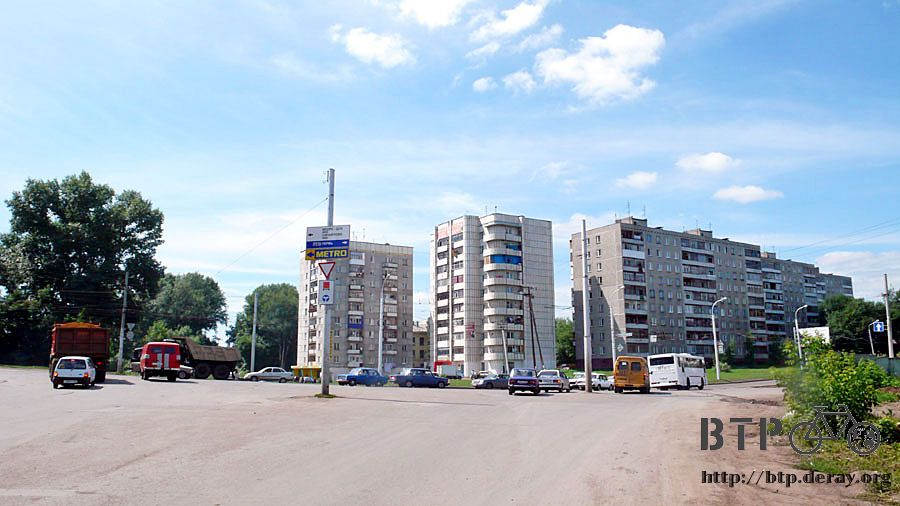

放心～我們罩得很
依照房間那台暖氣機的重量，猜想這應該是裡頭裝了水，插電就會加熱，既安全又可靠，洗過的衣服披在上面也乾的很快。
早上起床的時候外面已經是一整片的藍天，天氣很好，但溫度依然很低，從前兩天的十度邊緣變成二十度左右。
這裡養了兩隻看門的大狗，都沒有綁起來，還好他們對我沒興趣。
早餐在旅館吃麵包配咖啡，簡單的解決掉，趁著好天氣趕緊上路，目前距離烏法只剩下七十六公里，過中午就可以抵達。
陰雨已經停了，空氣很冰涼，討厭的濕氣終於消退，雖然冷了點，就當吹著免費的冷氣，今天可以開心的騎車。
低頭可以看到自己的影子，突然覺得能夠看著自己的影子騎車是一件很幸福的事情，有太陽的照耀真是太好了。
越往西邊走就越有離開山區的感覺，起伏的山路少了，森林也轉變成開闊的草原，海拔依舊是負兩百公尺之間徘徊。
兩旁種植的大多是小麥，收割之後的小麥梗就原地堆起來，明明不過就是草堆而已，數大便是美呀。
靠近一點看，這種圓柱型的應該是機器堆的，人工堆的則是像半圓形的小山。
路上有一段大規模的修路，只開放單線車道通行，在進行交通管制。
多謝這些修路的工人辛勤的工作，俄羅斯的道路才能有這麼好的水準，他們對我也很友善。
等聊完天，我要上路的時候，為了我騎車的安全著想，他們將兩邊的車流全部都攔下來，只讓我一個人通行，真是無比感謝。
離開山區之後，路旁的平地越來越寬廣，城鎮和店家也越來越多，又到了補給糧食的時候了。
在這間商店進行大採購，所有的東西都貼上標價的貼紙，越看讓我越傷心。
同樣的東西，之前在餐廳或是加油站買，都比這裡要貴上兩至五成，全部都買貴了，真是心疼。
現在到了純正經營的商店，價錢都變得很友善，一口氣買了兩塊甜麵包、柳丁汁、一袋蛋糕、一堆的巧克力、糖果，和好吃的牛奶冰淇淋。
這種冰淇淋是沒有包裝袋的，看起來就是一個餅乾杯子裡頭裝著牛奶冰淇淋，在哈薩克就常常吃。
俄羅斯也有賣一樣的東西，價錢從五元到八元盧布不等，還算便宜。
這間商店的冰箱裡也有賣這種冰，但是有兩種標價，看起來外型完好的一個賣五塊五，因為運送而被壓扁的只賣兩塊。
外型完全不影響味道，便宜的價錢讓我一口氣買了七個壓扁的冰淇淋當午餐吃，因為天氣有點冷，所以得站在外頭邊曬太陽邊吃才行。
過了中午，氣溫開始逐漸回升，從二十度慢慢升到三十度左右，外套和排汗衣的拉鍊又往下拉，這樣比較通風。
在哈薩克惱人的蒼蠅從進入俄羅斯之後就不再出現，冬天沒有蒼蠅這個講法是正確的，但取而代之的是蚊子，很多很多的蚊子。
只要停在路邊，馬上就會被一整群的蚊子騷擾，大隻、小隻的都有，騎車時身上也停滿了小飛蟲。
下午兩點的時候終於要進入烏法了，在這邊要跟M5道路說掰掰，希望進入烏法改走M7這個選擇是正確的，因為一旦做了決定，就沒有回頭路可以走了。
矗立在黃色花海中的烏法地標。
這一條是烏法河，水質看起來還蠻乾淨的，很多小鴨子在游泳，也有人在這邊釣魚。
這一座則是烏法橋，兩旁的護欄髒得恐怖，厚厚一層灰泥都是大卡車揚起的泥沙附著上去的，旁邊那一座鐵橋則是給火車走的。
從進入烏法開始就有點迷路，往市區的路施工得有點誇張，道路蜿蜒的繞來繞去，都搞不清楚自己往何處騎。
好不容易進到市區，這裡可是很大的城市，在沒地圖的情況下只能憑著第六感和指南針亂走。
最先看到這個告示牌，一邊是往北、一邊是往南，我選擇往北走，然後就開始迷路了，應該選擇往南才對>"<

市區當然很熱鬧，馬路很寬，公車、電車都在路上跑，鐵軌遍佈整座城市，還挺有綠化的效果。

啃著剛才在商店買的大麵包，除了尋找通往M7的道路之外，眼光也同時搜尋著網路的招牌。
被說成是鐵幕國家的俄羅斯，住在這裡的人並不需要加裝鐵窗，這邊的治安水準可能是號稱自由國家所要學習的。
烏法的道路告示牌很瞎，不是寫地名或是路名，通通都是代號，『1P315』到底是什麼意思？
其他還有很多類似的代碼，一路跟著這些告示牌走，越往北就進入了工業區。
這裡應該是石化業的聚集地，烏法可能產油吧，很多大煙囪和油管，以及冒著火焰的機械，道路的情況則變得有點糟糕。
因為太多大卡車在此通行，路都被壓爛了，卡車很多的緣故，空氣也是髒到不行，用閉氣十秒鐘來避開廢氣這一招在工業區根本就沒有用。
因為處處都是廢氣，每一輛開過的大卡車都冒著黑煙，再多待一陣子我的氣管就要得癌症了。

放棄找網路的奢望，只想快一點離開烏法工業區，趕緊接上M7道路，但一路往北走，叉路很多，標示也不清不楚。
怕拐錯一個彎就要繞進工業區裡大迷路，一遇到分叉路口就停在路邊陷入長考。
在沒有道路指示牌的情況下，判斷該走哪一條路可以用幾個線索來選擇，
一：車流量，車流量大的理論上就是比較重要的道路
二：車種，私家車、大貨車、公車這些車種混著出現的道路比較有可能是聯外的路。
三：路況，鋪設的平整的路想必比崎嶇蜿蜒的路好一些，
除了這三個線索之外，我最常用的就是問人，路長在嘴上，勇於開口就會有答案。
一路上問了幾個人之後漸漸的離開了工業區，終於可以逃離噁心的工業廢氣。
看見一個騎自行車的大叔，我問他往前走可以到莫斯科嗎？
一開始他說可以，我就很開心的要繼續騎，然後他又叫我等一下，比手畫腳的說直走到不了莫斯科。
一下子說可以，一下子又說不行，路長在嘴上，可是語言溝通不順的時候真是傷腦筋。
可以感覺他很想幫我，但是沒辦法讓我明白他想說的話，所以就叫我跟著他騎。

騎了幾百公尺，出現離開烏法時的關卡檢查站，他將我帶來給警察處理。
一開始覺得被耍了，我很討厭警察，你還把我帶到警察這邊來，但他真的是好心想幫忙，跟警察說我想去莫斯科，可是俄文聽不懂，請警察教我怎麼走。
之前都不搭理我的警察，看到我自己送上門來，這次想不理都不行了，問了我是從哪裡來的？
我回答台灣，這樣就算完成詢問，護照什麼的都沒叫我拿出來，關於俄羅斯警察很壞的這個傳言到底是怎麼回事？
為了方便問路，我拿出精裝版的俄羅斯地圖，翻到烏法這一頁，警察看了一下搖頭說這本不行，太差了，他自己畫一份給我。
跟著進入關卡內，看著警察一面畫地圖一面講解，本來我應該從西邊離開烏法，但是一路向北走，已經偏離本來要走的路了。
接下來只有繼續向北走，三十公里之後左轉，才有辦法接回M7道路，但是這樣走可是兜了一個圈子。
所以要嘛就是往回走重新經過一次工業區的荼毒，不然就是繼續往北騎，多繞點路接回M7，當然選擇後者，多繞點路跟有毒氣體怎能相提並論。
收下這張地圖當紀念品，道謝後準備離開，關卡外面有一個很漂亮的女警正在訓練一條大狼狗，拿出相機拍了幾張照，
馬上就被其他的警察阻止說這裡禁止攝影，本來要我交出底片，我說這是數位相機，然後就在他們的監視下將照片刪除。
技巧性的才保留了幾張下來，可惜了漂亮女警的照片就這麼沒了。
照警察畫的路往北走，二十公里之後經過比較小的城鎮，這樣的城鎮進去閒晃也不怕迷路，稍微轉了一下沒有我需要的網路。
雖然有旅館，可是現在才下午六點多，離天黑還有五個小時，住宿太浪費時間和金錢。
接著又騎了十公里，終於到了要左轉的告示牌，旅行的下一站是五百多公里之外的城市，不知道該怎麼發音，只好記下拼法，沿路跟著騎。
左轉之後經過一座大橋，接著沿路上都是大小不等的河流、湖泊、和沼澤，蚊蟲的數量激增到不得不戴上口罩保護口鼻，戴上耳機保護耳朵。
雖然蚊蟲很多，但是景色也不錯，到這邊來釣魚、划船、露營的人不少，我有點想在這邊露營一個晚上，可是還沒解決晚餐呢。
看著沿路經過的沼澤，開始幻想這裡會不會有鱷魚...
揮趕著蚊蟲騎車，一個多小時後終於看到有房舍的蹤影，此時我只需要一間商店讓我買點喝的，今天就算結束，可以找地方露營了。
雖然這麼多房子聚集在一起，但是沒有任何商店或是餐廳，這裡是非常純粹的郊區住宅，沒有絲毫的商業氣息，
所以很遺憾的，也沒有我需要的東西，看起來是廢棄的空屋倒是不少，露營地點的選擇又多了一些。
不想餓著肚子睡覺，所以又繼續向前騎，一直到晚上九點，離開了蚊蟲飛舞的沼澤區，看見了令人雀躍的看板，M7道路出現了。
從M7往回騎到烏法只有三十公里的距離，我則騎了八十公里才兜了一個大圈子接上這裡，這就是迷路的代價。
但這都不重要，反正騎到了就好，而且路旁又再度看到房子，再去碰運氣找商店補給，空空的水壺加上空空的肚子真令人難熬。
問了在城鎮入口騎單車的小朋友，往鎮裡面騎有商店嗎？
他們搖搖頭說裡面沒有商店，但是又說這裡有商店，跟早上一樣的情形，到底是有還是沒有呢？
讓小朋友騎車帶著我去找商店，他們騎在小路上，我得下車用牽的，路面太凹凸不平了，原來這邊有商店，但不是在鎮裡面，是在馬路邊。
這間商店很有趣，可能太多人進來說要吃飯，老闆不勝其擾，所以就在看板上畫了用餐的圖示，然後打叉，表示這裡不是餐廳。
多虧小朋友帶我找到這間商店，除了買我需要的水和麵包之外，也買了四個冰淇淋分大家一起吃，聊表謝意。
最後的採買進行完畢，都已經快要晚上十點了天色還是很明亮，跟小朋友說掰掰，繼續往北邊騎。
留意著有沒有適合露營的場所，今天晚上看來不會下雨，心裡打算就算在露天的地方過夜也沒關係，只要蚊蟲可以被隔離在帳篷外面就好。
眼前看到一棟很大的廢棄空屋，像是拆到一半或是蓋到一半，沒有任何門窗，連階梯都沒有。
停靠好小多進去查看一下適不適合過夜，裡頭很空曠，沒有任何的擺設，地上除了為數不少的大便之外，只有一些碎玻璃和石頭。
隔間很多，越隱蔽的地方大便越多，最靠近路邊的還算乾淨，評估過之後認定這裡適合露營。
沒有樓梯，所以進出都要爬上爬下的，依序卸下包包，往空屋裡放，最後再將小多扛上來。

這邊的蚊蟲也不少，但是和田野之間相比算是好太多了。
快速的將睡墊充氣，睡袋、帳篷在一分鐘之內搭好，過夜的地方很快就完工了。
旅行了這段時間，露營也從一開始的新手，到現在慢慢有了心得。
也許不是每個人都有必要在這樣的情況下露營，但聽一些粗略的感想當作經驗談也不錯。
如果沒有十足的把握晚上不會下雨，那麼就不要睡在露天的地方，盡可能找到遮蔽物，以免夜裡變成落湯雞。
不要選擇容易被看見的地方露營，盡可能挑隱蔽的處所，將自己和旅行裝備隱藏起來。
試想一下，要是你半夜一點要去便利商店買消夜，看到有人在陰暗的巷子裡搭帳篷睡覺，放了滿地的包包和一輛單車，你會怎麼想？
『好可憐喔，他怎麼睡在那邊？』，會這樣想的人不多。
『哇靠，這是在搞什麼鬼？』，這才是一般人的想法。
然後接下來的做法就因人而異了，有人會選擇不要搭理、有人則可能靠過來探一下虛實，甚至行搶都有可能。
所以，不要讓自己輕易的曝光，這也是為什麼睡在空曠的加油站我會將小多給放倒的緣故。
如果可能的話，在露營的處所搭好之後，自己跑到外面看一下容不容易發現裡面有人的蹤影，這樣就更妥當了。
再來就是夜間睡覺的時候，要將什麼東西放進帳篷裡？
我攜帶的帳棚不大，我也不打算放一堆東西在裡面，每次只會帶三種東西陪我一起睡覺，護照、手電筒和催淚瓦斯。
因為行李很多，小多也在外頭，所以帳篷的挑選非常重要，一定要可以看見外面的情形，
也就是有所謂的星空帳，名字很好聽，睡覺可以看著星空，但沒那麼浪漫啦，可以看著自己的行李和單車睡覺更重要。
尤其星空帳一定要有蚊帳，同時蚊帳的密度要很細很細才行，這個世界上有一種蚊子叫做小黑蚊，因為牠很小隻，
可以輕易的穿越蚊帳的隙縫把你咬得渾身紅腫發癢，所以蚊帳的挑選就是以能夠阻擋小黑蚊為及格的標準。
還有就是睡覺時穿的衣服，不需要穿太多，有睡袋的保暖已經足夠，留一些保暖的衣物在隔天早上離開睡袋的時候穿，這樣才不會感冒。
雖然很辛苦，但是夜間請不要睡得太熟，留意周遭的動靜，是不是有人靠近，這關係到自身的安危。
最後，如果半夜真的有人靠過來，請在最短的時間內讓自己清醒並且冷靜下來，在情況明朗之前不要開口說任何話。
因為你不知道對方是誰，同時對方也不知道你是幹嘛的，沒必要暴露自己的身分，然後就看情況如何隨機應變吧。
睡在這裡還蠻不錯的，夜裡真的超冷，還好有牆壁可以擋點風，而且出乎意料的，白天是好天氣，晚上居然下起雨，還好今天沒有睡在野外。
晚上除了有路過的駕駛到這裡小便，走在砂石地上的腳步聲和黑色的人影驚醒了我，除此之外相當平安。
今天多虧很多俄羅斯人一路上罩著我，騎車很安全、迷路還有指導、肚子餓的時候連小朋友都能帶我去商店，你們真的很罩！
繼續閱讀：7.27 光天化日之下
俄羅斯-盧布－ 1：1.3 台幣
7.26 |
總計：268.5元 |
早餐咖啡、麵包25元、商店很多巧克力、柳丁汁、甜麵包、很多牛奶冰淇淋、糖果186元、好不容易找到的商店氣泡水、大麵包、冰淇淋57.5元 |
|